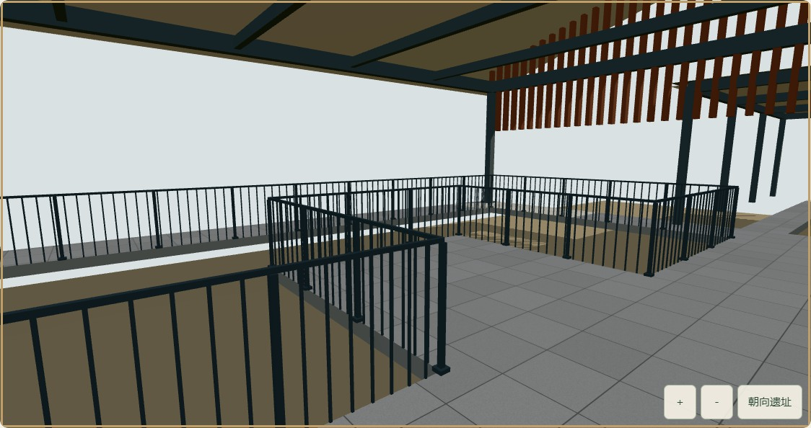
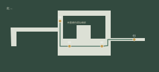
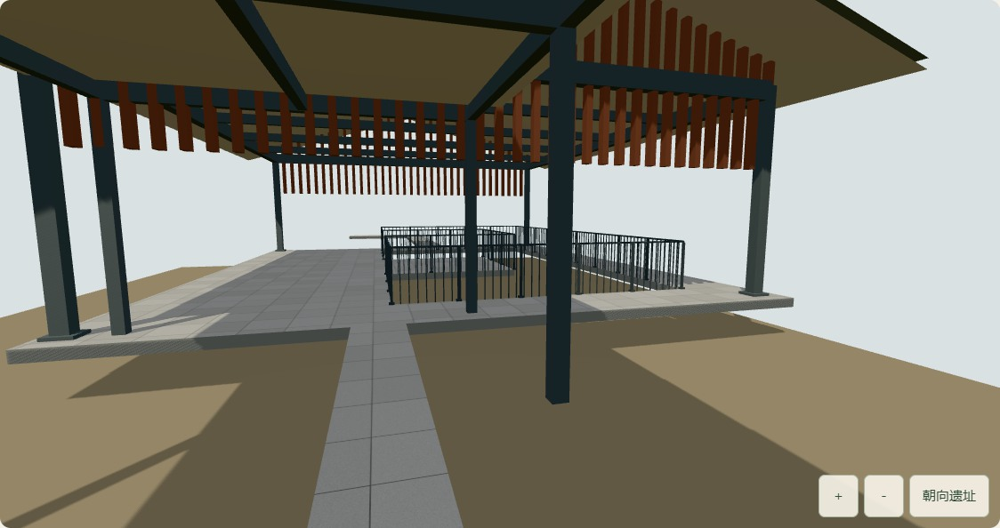
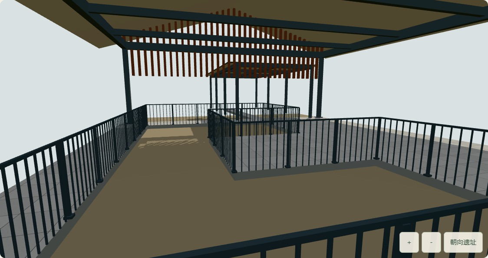
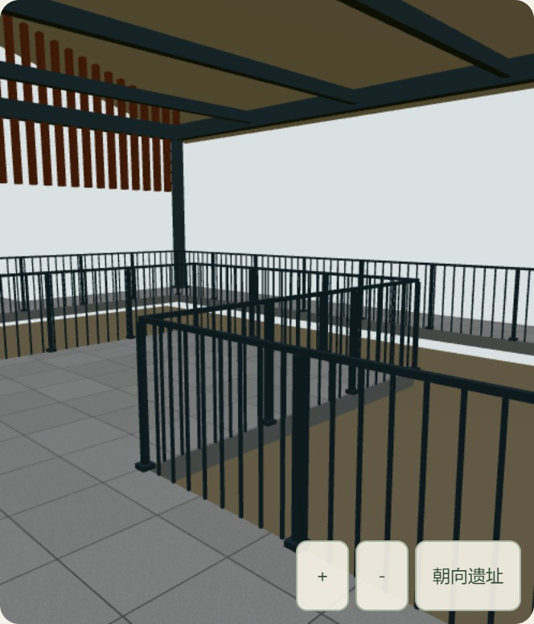

问山 · 有据的空间观察 / 2026.10.03从平面图
走入东路展廊
大上清宫 · 天皇殿展廊 · 局部通道重建网站现可从南侧入口转场至东路，沿栈道观察四个位置，切换对应实拍，再回到原来的外部视角。路径来自公开的一层平面；钢架、屋面和栏杆依据现场照片解释。
29.28 m模型内的连续栈道
04有平面依据的观察节点
3.98 MB独立 GLB，进入时才加载
这是局部资料建模，仍未完成真实内部还原。高度、栏杆截面和石材接缝为展示估计；遗址坑仅表现范围与高差。周边展厅、遗物细部及南侧入口至东路的连接段尚未重建。这里不是实拍全景，也不能用于现场导航。
打开问山网站 ↗操作路径：景点地图「大上清宫」→「前往宫观入口」→「接近南侧入口」→「从入口进入东路局部通道」。
实拍保留，新增可移动的通道
 原有实拍资料｜THAD / 五季摄影。照片中的遗物、周围院落与现场材质细部没有被这次模型完整重建。
原有实拍资料｜THAD / 五季摄影。照片中的遗物、周围院落与现场材质细部没有被这次模型完整重建。
新增可操作局部模型｜网页实际截图。角度与实拍不同；褐色区域仅标示资料支持的遗址范围，不能视为遗址精细复原。原来的实拍导览继续独立保留。三维观察节点均关联此处真实照片；切换为照片后释放三维资源，返回时恢复途中位置或已经抵达的节点。
栈道会沿拐角走，不穿过遗址坑

自行描绘的平面控制图：浅色为现代栈道，绿色线为相机移动路径，金色点为观察节点。北向在左；比例及位置沿用现有平面到影像的估算配准，非实测。
01 · 东路栈道接近点
04 · 展廊北侧栈道实际 GLB 检查了 1,172 个路径采样点：20 厘米探测范围全部落在通道上，与栏杆及钢柱的最近模型距离约 0.68 米。四个节点转换后均位于同一来源建筑范围内；这些数字验证模型一致性，不代表现场精度。
实际网页连续行走
网页实时三维画布录制，时长 14.96 秒，从节点 01 沿折线移动至节点 04；无预渲染替代。录制有性能开销，帧率另行测量。
交互与资源验证
- 南侧入口、Enter 键进入东路
- 跨节点沿全部折线拐角移动
- 方向键、拖动、双指和加减缩放
- PageUp 返回上一观察点
- 照片对应正确，途中切换后继续
- 恢复外部相机、目标点及页面位置
- 内部期间暂停景区镜头与动画
- 模型失败、WebGL 中断及重试
- 下载中关闭可中止，不遗留画布
- 几何、材质、位图和阴影释放
31 项项目测试、TypeScript 与生产构建通过。展廊专项 23 项、录制/中止/地理框架 3 项浏览器检查通过；正常流程没有脚本或着色器错误。故障测试中的下载失败为主动注入。
实际设备与性能范围
| 条件 | 实际渲染画布 | 8 秒平均 FPS | 帧耗时 p95 |
|---|
| 1920 × 1080 桌面视口内的展廊 | 1124 × 594 | 143.9 | 7.2 ms |
| 390 × 844 手机视口模拟 | 498 × 582 | 144.0 | 7.2 ms |
Windows · Headless Chrome 154.0.8037.93 · Intel UHD Graphics / ANGLE D3D11。局部展廊约 5,858 三角形、20 次绘制。上述高帧率只对应这个小范围模型；不是整个景区的性能，也不是实体手机成绩或长期稳定下限。

手机视口与触摸模拟；真实手机测试仍未完成。